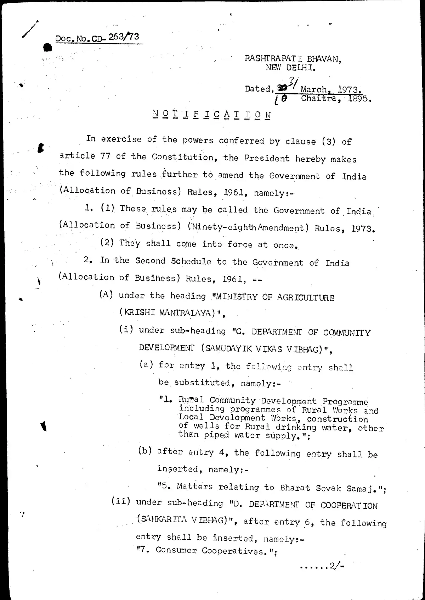
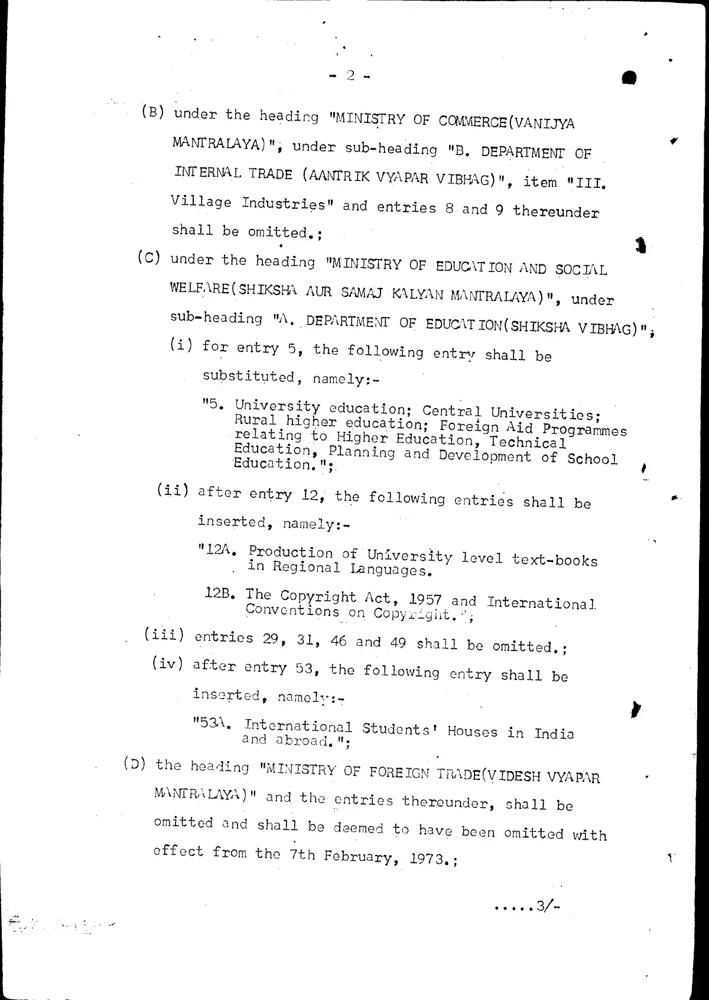
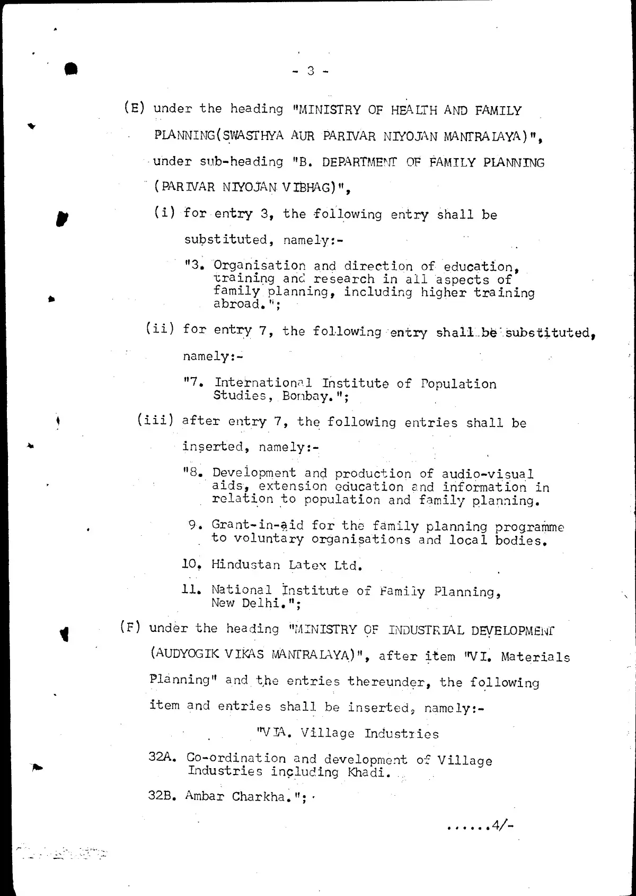
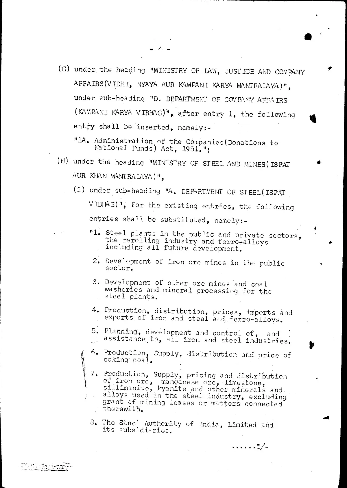
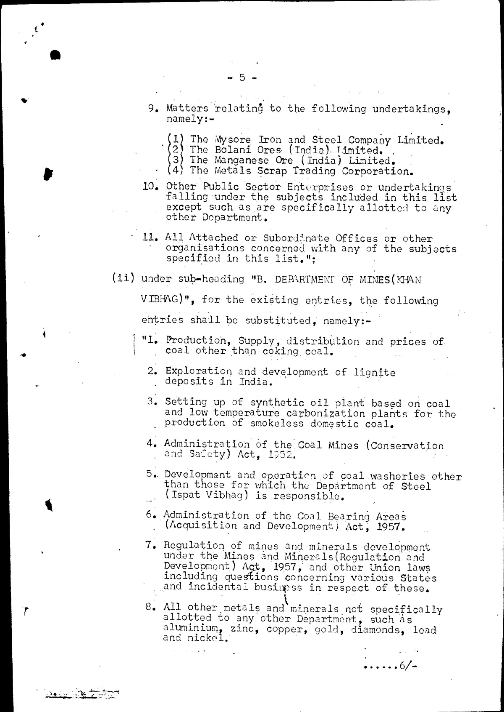
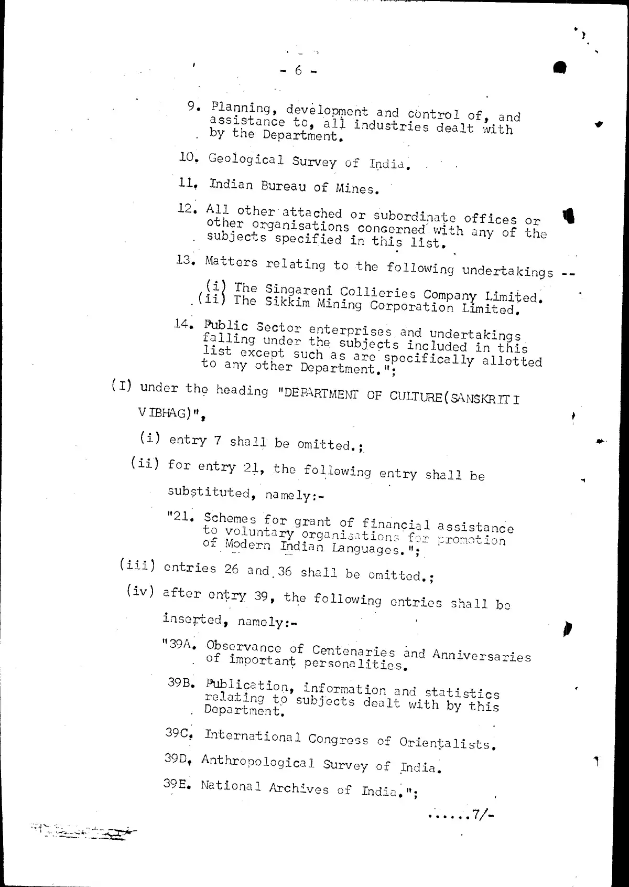
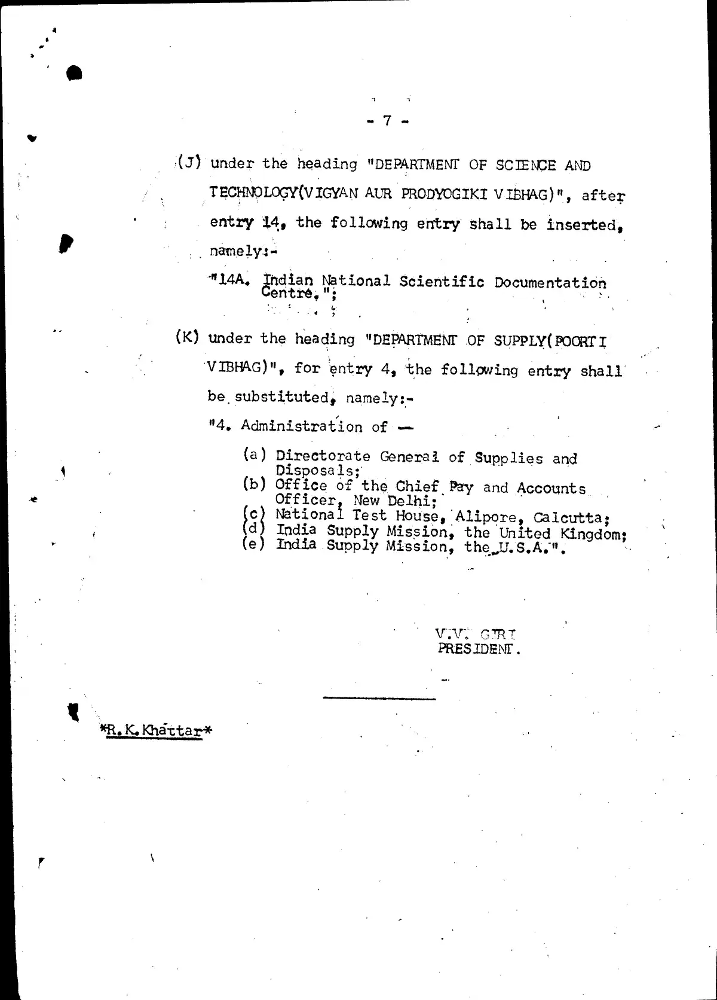

Amendment #98 (S.O. 189(E), 1973)
22 changes: 0 to the First Schedule, 22 to the Second Schedule. 22 applied
What it did to the ministries
- endedMinistry of Foreign Trade is abolished change 9 · histories: Foreign Trade
- grewMinistry of Steel and Mines grows from 20 to 25 subjects change 15, 16 · histories: Steel and Mines
The order, page by page
Page 1 of 7

123Schedule 2 › MINISTRY OF AGRICULTURE › DEPARTMENT OF COMMUNITY DEVELOPMENT › entry 1
- 1. Rural Community Development Programme including programmes of Rural Works and Local Development Works, construction of wells for Rural drinking water, other than piped water supply.
applied at schedule 2 › ministry MINISTRY OF AGRICULTURE › department C › entry 1 in the Rules after #98
after Schedule 2 › MINISTRY OF AGRICULTURE › DEPARTMENT OF COMMUNITY DEVELOPMENT › entry 4
- 5. Matters relating to Bharat Sevak Samaj.
applied at schedule 2 › ministry MINISTRY OF AGRICULTURE › department C › entry 5 in the Rules after #98
after Schedule 2 › MINISTRY OF AGRICULTURE › DEPARTMENT OF COOPERATION › entry 6
- 7. Consumer Cooperatives.
applied at schedule 2 › ministry MINISTRY OF AGRICULTURE › department D › entry 7 in the Rules after #98
Page 2 of 7

456789Schedule 2 › MINISTRY OF COMMERCE › DEPARTMENT OF INTERNAL TRADE › III. Village Industries; Schedule 2 › MINISTRY OF COMMERCE › DEPARTMENT OF INTERNAL TRADE › III. Village Industries › entry 8; Schedule 2 › MINISTRY OF COMMERCE › DEPARTMENT OF INTERNAL TRADE › III. Village Industries › entry 9
applied at schedule 2 › ministry MINISTRY OF COMMERCE › department B › group_heading III in the Rules after #98
Schedule 2 › MINISTRY OF EDUCATION AND SOCIAL WELFARE › DEPARTMENT OF EDUCATION › entry 5
- 5. University education; Central Universities Rural higher education; Foreign Aid Programmes relating to Higher Education, Technical Education.
applied at schedule 2 › ministry MINISTRY OF EDUCATION AND SOCIAL WELFARE › department A › entry 5 in the Rules after #98
after Schedule 2 › MINISTRY OF EDUCATION AND SOCIAL WELFARE › DEPARTMENT OF EDUCATION › entry 12
- 12A. Production of University level text-books in Regional Languages.
- 12B. The Copyright Act, 1957 and International. Conventions on Copyright.
applied at schedule 2 › ministry MINISTRY OF EDUCATION AND SOCIAL WELFARE › department A › entry 12A in the Rules after #98
Schedule 2 › MINISTRY OF EDUCATION AND SOCIAL WELFARE › DEPARTMENT OF EDUCATION › entry 29; Schedule 2 › MINISTRY OF EDUCATION AND SOCIAL WELFARE › DEPARTMENT OF EDUCATION › entry 31; Schedule 2 › MINISTRY OF EDUCATION AND SOCIAL WELFARE › DEPARTMENT OF EDUCATION › entry 46; Schedule 2 › MINISTRY OF EDUCATION AND SOCIAL WELFARE › DEPARTMENT OF EDUCATION › entry 49
applied at schedule 2 › ministry MINISTRY OF EDUCATION AND SOCIAL WELFARE › department A › entry 29 in the Rules after #98
after Schedule 2 › MINISTRY OF EDUCATION AND SOCIAL WELFARE › DEPARTMENT OF EDUCATION › entry 53
- 53A. International Students' Houses in India and abroad.
applied at schedule 2 › ministry MINISTRY OF EDUCATION AND SOCIAL WELFARE › department A › group_heading C › entry 53A in the Rules after #98
Schedule 2 › MINISTRY OF FOREIGN TRADE
applied at schedule 2 › ministry in the Rules after #98
Page 3 of 7

10111213Schedule 2 › MINISTRY OF HEALTH AND FAMILY PLANNING › DEPARTMENT OF FAMILY PLANNING › entry 3
- 3. Organisation and direction of education training and research in all aspects of .. family planning, including higher training abroad.
applied at schedule 2 › ministry MINISTRY OF HEALTH AND FAMILY PLANNING › department B › entry 3 in the Rules after #98
Schedule 2 › MINISTRY OF HEALTH AND FAMILY PLANNING › DEPARTMENT OF FAMILY PLANNING › entry 7
- 7. International Institute of Population Studies, Bombay.
applied at schedule 2 › ministry MINISTRY OF HEALTH AND FAMILY PLANNING › department B › entry 7 in the Rules after #98
after Schedule 2 › MINISTRY OF HEALTH AND FAMILY PLANNING › DEPARTMENT OF FAMILY PLANNING › entry 7
- 8. Development and production of audio-visual aids, extension education and information in relation to population and family planning.
- 9. Grant-in-aid for the family planning programme to voluntary organisations and local bodies.
- 10. Hindustan Latex Ltd.
- 11. National Institute of Family Planning New Delhi.
applied at schedule 2 › ministry MINISTRY OF HEALTH AND FAMILY PLANNING › department B › entry 8 in the Rules after #98
after Schedule 2 › MINISTRY OF INDUSTRIAL DEVELOPMENT › VI. Materials Planning
- VIA. Village Industries
- 32A. Co-ordination and development of Village Industries including Khadi.
- 32B. Ambar Charkha.
applied at schedule 2 › ministry MINISTRY OF INDUSTRIAL DEVELOPMENT › group_heading VIA in the Rules after #98
Page 4 of 7

1415after Schedule 2 › MINISTRY OF LAW, JUSTICE AND COMPANY AFFAIRS › DEPARTMENT OF COMPANY AFFAIRS › entry 1
- 1A. Administration of the Companies (Donations to National Funds) Act, 1951.
applied at schedule 2 › ministry MINISTRY OF LAW. JUSTICE AND COMPANY AFFAIRS › department D › entry 1A in the Rules after #98
Schedule 2 › MINISTRY OF STEEL AND MINES › DEPARTMENT OF STEEL
- 1. Steel plants in the public and private sectors the rerolling industry and ferro-alloys including all future development.
- 2. Development of iron ore mines in the public sector.
- 3. Development of other ore mines and coal washeries and mineral processing for the steel plants.
- 4. Production, distribution, prices, imports and exports of iron and steel and ferro-alloys.
- 5. Planning, development and control of, and assistance to, all iron and steel industries.
- 6. Production, Supply, distribution and price of coking coal.
and 5 more
- 7. Production, Supply, pricing and distribution of iron ore, manganese ore, limestone sillimanite, kyanite and other minerals and alloys used in the steel industry, excluding grant of mining leases or matters connected therewith.
- 8. The Steel Authority of India, Limited and its subsidiaries. ● 5/-- - 50
- 9. Matters relating to the following undertakings A namely:- The Mysore Iron and Steel Company Limited. : (2) The Bolani Ores (India) Limited. 3) The Manganese Ore (India) Limited. (4) The Metals Scrap Trading Corporation.
- 10. Other Public Sector Enterprises or undertakings falling under the subjects included in this list except such as are specifically allotted to any other Department.
- 11. All Attached or Subordinate Offices or other organisations concerned with any of the subjects specified in this list.
applied at schedule 2 › ministry MINISTRY OF STEEL AND MINES › department A in the Rules after #98
read page break
Page 5 of 7

16Schedule 2 › MINISTRY OF STEEL AND MINES › DEPARTMENT OF MINES
- 1. Production, Supply, distribution and prices of coal other than coking coal.
- 2. Exploration and development of lignite deposits in India.
- 3. Setting up of synthetic oil plant based on coal and low temperature carbonization plants for the production of smokeless domestic coal.
- 4. Administration of the Coal Mines (Conservation and Safety) Act, 1952.
- 5. Development and operation of coal washeries other than those for which the Department of Steel (Ispat Vibhag) is responsible.
- 6. Administration of the Coal Bearing Areas (Acquisition and Development) Act, 1957.
and 10 more
- 7. Regulation of mines and minerals development under the Mines and Minerals (Regulation and Development) Act, 1957, and other Union laws including questions concerning various States and incidental business in respect of these.
- 8. All other metals and minerals not specifically allotted to any other Department, such as aluminium, zinc, copper, gold, diamonds, lead and nickel. ..6/-
- 9. Planning, development and control of, and assistance to, all industries dealt with by the Department.
- 10. Geological Survey of India.
- 11. Indian Bureau of Mines.
- 12. All other attached or subordinate offices or other organisations concerned with any of the subjects specified in this list.
- 13. Matters relating to the following undertakings
- i. The Singareni Collieries Company Limited.
- ii. The Sikkim Mining Corporation Limited.
- 14. Public Sector enterprises and undertakings. falling under the subjects included in this list except such as are specifically allotted to any other Department.
applied at schedule 2 › ministry MINISTRY OF STEEL AND MINES › department B in the Rules after #98
read page break
Page 6 of 7

17181920Schedule 2 › DEPARTMENT OF CULTURE › entry 7
applied at schedule 2 › department DEPARTMENT OF CULTURE › entry 7 in the Rules after #98
Schedule 2 › DEPARTMENT OF CULTURE › entry 21
- 21. Schemes for grant of financial assistance to voluntary organisations for promotion of Modern Indian Languages.
applied at schedule 2 › department DEPARTMENT OF CULTURE › entry 21 in the Rules after #98
Schedule 2 › DEPARTMENT OF CULTURE › entry 26; Schedule 2 › DEPARTMENT OF CULTURE › entry 36
applied at schedule 2 › department DEPARTMENT OF CULTURE › entry 26 in the Rules after #98
after Schedule 2 › DEPARTMENT OF CULTURE › entry 39
- 39A. Observance of Centenaries and Anniversaries of important personalities.
- 39B. Publication, information and statistics relating to subjects dealt with by this Department.
- 39C. International Congress of Orientalists.
- 39D. Anthropological Survey of India.
- 39E. National Archives of India.
applied at schedule 2 › department DEPARTMENT OF CULTURE › entry 39A in the Rules after #98
Page 7 of 7

2122after Schedule 2 › DEPARTMENT OF SCIENCE AND TECHNOLOGY › entry 14
- #14A. Indian National Scientific Documentation Centre.
applied at schedule 2 › department DEPARTMENT OF SCIENCE AND TECHNOLOGY › entry 14 in the Rules after #98
Schedule 2 › DEPARTMENT OF SUPPLY › entry 4
- 4. Administration of
- a. Directorate General of Supplies and Disposals
- b. Office of the Chief Pay and Accounts. Officer, New Delhi National Test House, Alipore, Calcutta
- d. India Supply Mission, the United Kingdom
- e. India Supply Mission, the U.S.A.
applied at schedule 2 › department DEPARTMENT OF SUPPLY › entry 4 in the Rules after #98
How this document was read
From the Government of India (Allocation of Business) Rules, 1961 and their amendments, as published by the Cabinet Secretariat (cabsec.gov.in), read by orgpedia. The readings of the older scanned gazettes have known gaps.